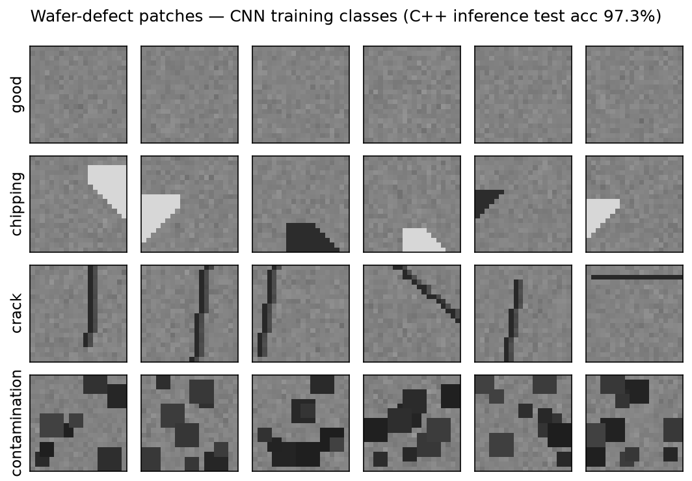
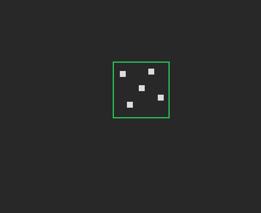

切る・削る・磨く × 高度知能化
加工の3系統に加えて、装置を賢くする4つの要素をC++17でゼロから実装：
AI欠陥分類（自作CNN推論）・スピンドル振動/チャタ検出（自作FFT）・
CMP研磨のAPC・平坦化・終点検出（磨く）・ストリート自動整列（NCC）。
以下はすべてツール自身（smart_demo / test_cnn）が出力した実測値です。
20×20パッチを 良品/チッピング/クラック/汚染 に分類。学習はPython、推論は畳み込みからC++で自作。

教示パターンをライブ画像から検出し、サブピクセルのオフセットと微小回転を推定。緑＝一致位置。

エアベアリングスピンドルの振動をFFTで解析。回転次数の高調波に対し、非高調波の強いピーク＝チャタ。対数パワー表示。
パッドが目減り（glazing）してもRun-to-Run制御で研磨時間を補正し、除去量を目標300nmに維持。
研磨中の摩擦（モータ電流）が膜を削り切った瞬間に急落 ── その終点(EPD)を自動検出。